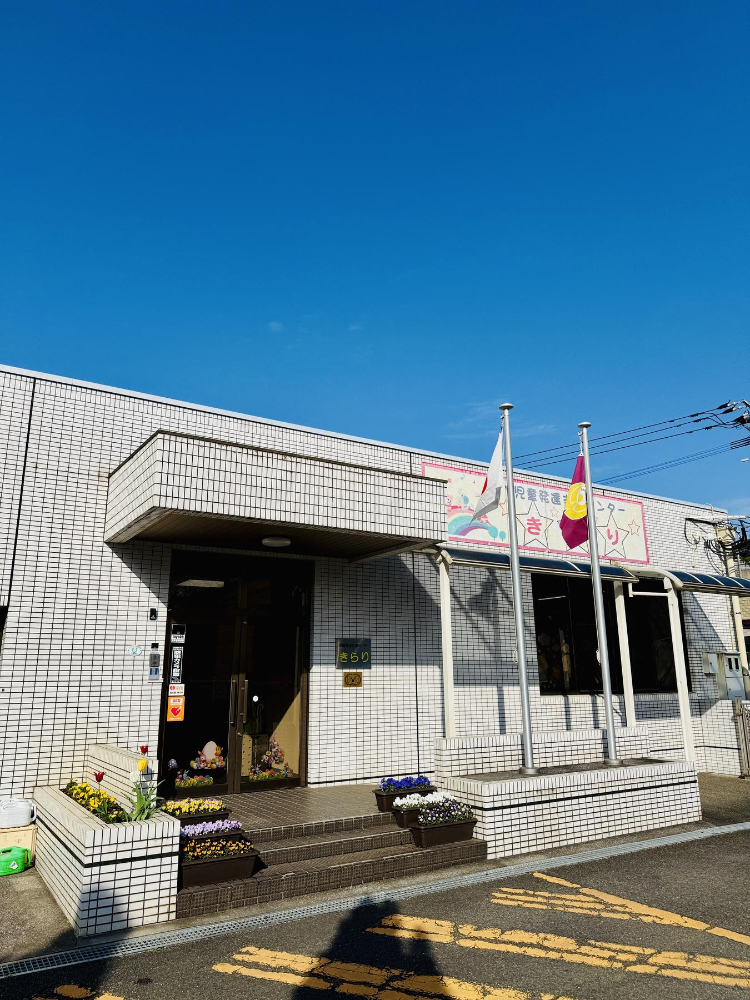
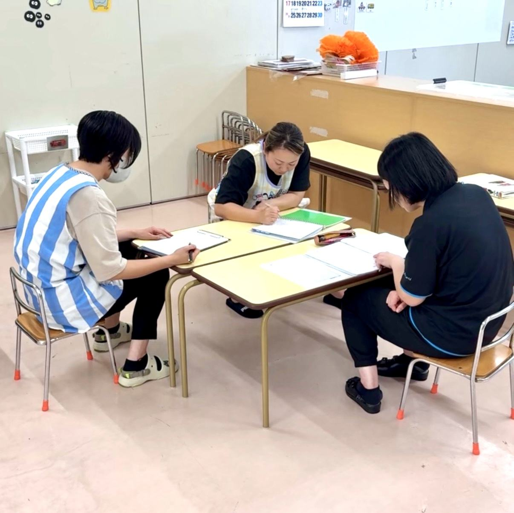
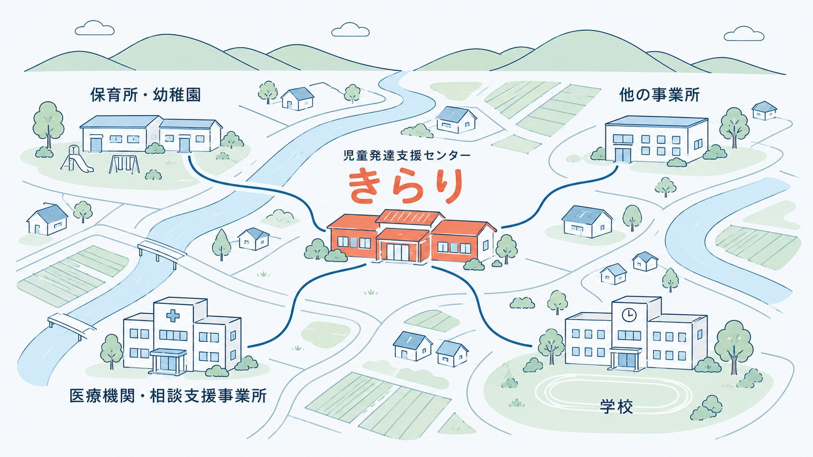
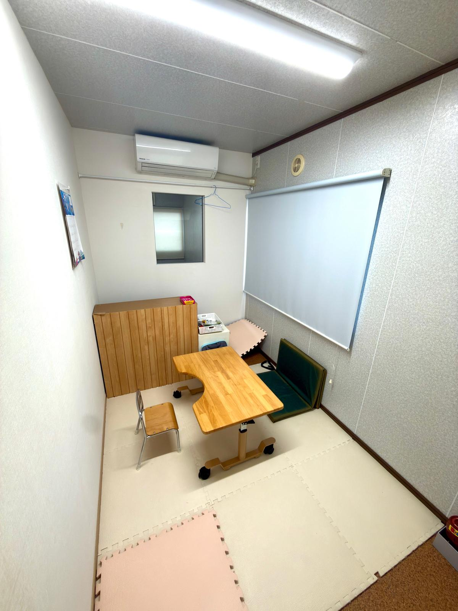
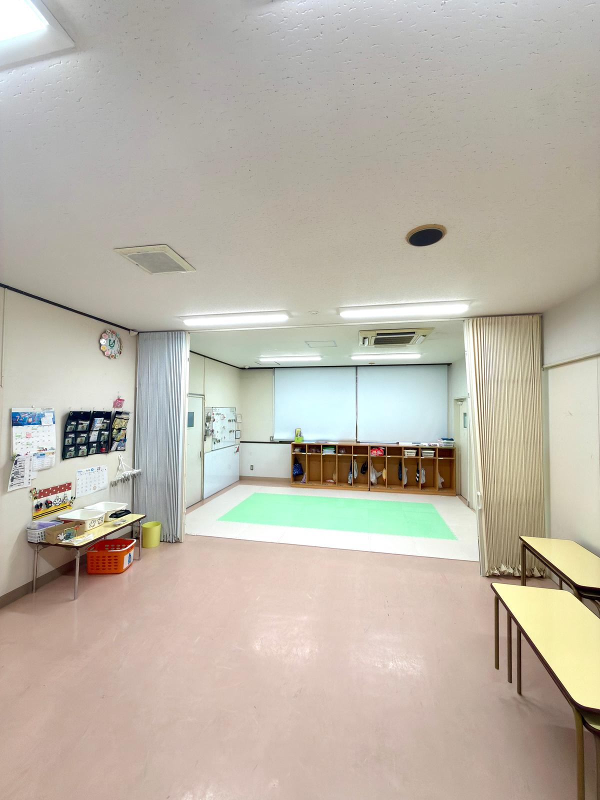
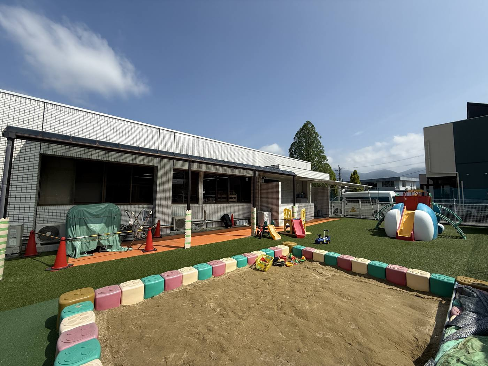

言語聴覚士・作業療法士・理学療法士を募集しています
子どもたちの毎日に
専門職の視点が必要です。
きらりは福岡県田川郡福智町赤池にある児童発達支援センターです。2歳から就学前までの子どもが毎日通ってきています。
ここでの専門職の仕事は、給食も着替えも外あそびもすべて支援の時間になります。生活の場面をまるごと見ながら関わる仕事です。
 写真①-A療育室の様子
写真①-A療育室の様子 写真①-B使っている道具や玩具
写真①-B使っている道具や玩具 写真①-C園庭・外あそびの場所
写真①-C園庭・外あそびの場所指で横に送れます
勤務条件
きらりの特徴
件数のノルマなし
一人あたりの関わりの長さは、支援計画で決めています。
予定は自分で組み立てる
園の活動の流れが先にあり、その中に個別療育の時間を置いていきます。
評価も支援も生活の場面で
個別療育の時間以外は、クラスに入って保育士と一緒に動きます。
就学まで同じ担当
担当する子どもは年単位で変わりません。
保育士と同じチーム
専門職が一人で抱える体制ではありません。
※ここに書いた内容は見学の際にそのまま確認していただけます。

2歳から就学前までの子どもが
毎日ここに通っています。
1日の流れ
毎日同じ流れではありません。ここに載せるのは、ある一日の例です。
出勤して、その日の予定を確認したり、療育の準備をおこないます。
朝礼で、きらり全体のその日の予定を確認し、子どもたちの情報を共有します。

写真③朝礼・ミーティング風景（イラストでも可）子どもたちの受け入れに対応し、クラスに入って一緒に過ごします。
集団療育の時間です。各クラスの子どもたちに集団での療育をおこないます。
 写真④集団療育・クラスでの場面（イラストでも可）
写真④集団療育・クラスでの場面（イラストでも可）食事の補助に入ります。摂食や嚥下の状況を確認して、保育士と情報を共有します。
 写真⑥給食・食器の写真（人物なしで成立）
写真⑥給食・食器の写真（人物なしで成立）1時間の休憩です。
個別療育の時間です。保護者同伴での療育や相談対応もおこないます（同伴は必ずではありません）。
 写真⑤個別療育で使う道具の写真
写真⑤個別療育で使う道具の写真子どもたちが帰宅します。
 写真⑦玄関まわりの写真（人物なしで成立）
写真⑦玄関まわりの写真（人物なしで成立）個別療育の2回目に入ります。
その日の記録を書きます。
退勤します。
きらりの役割
地域の中核を担うセンターとして
2024年の児童福祉法改正で、児童発達支援センターは地域の障害児支援の中核を担う機関として位置づけられました。きらりはその役割を担うセンターです。
ここでの専門性は、通ってくる子どもだけに向けるものではありません。地域の保育所や他の事業所からの相談に応じ、助言をおこなうことも仕事に含まれます。

図版⑧きらりと地域のつながりを示す図- 01保育所や学校に出向く
- 保育所等訪問支援で、子どもが実際に過ごす場所に行きます。集団の中でどう困っているかを見たうえで助言できます。
- 02関係機関と情報をつなぐ
- 医療機関や相談支援事業所と、担当する子どもについてやりとりします。就学に向けては学校との引き継ぎもおこないます。
- 03法人内の事業所とつながる
- 豊徳会には成人期まで含めた事業所があります。目の前の子どもの十年後を知っている職員が同じ法人の中にいます。
施設紹介


写真⑩療育室
 写真⑫評価用具や玩具
写真⑫評価用具や玩具募集要項
| 職種 | 言語聴覚士／作業療法士／理学療法士 |
|---|---|
| 雇用形態 | 正職員（総合職／法人での採用） パート（一般職／きらりでの採用） |
| 給与 | ※経験年数を考慮します |
| 勤務時間 | 8:00 〜 17:00（休憩60分） |
| 休日 | 年間120日以上／日曜・祝日 ※行事のある土曜は出勤 |
| 休暇 | 年次有給休暇（1時間単位で取得可） 法人の特別休暇（8/13〜15、12/30〜1/3） |
| 手当 | 通勤・住宅・資格・処遇改善 ほか |
| 勤務地 | 児童発達支援センターきらり（福岡県田川郡福智町赤池） |
| 応募方法 | お電話またはメールでご連絡ください。見学のみの希望も受け付けています。 電話 メール |
よくある質問
小児の経験がありません。それでも応募できますか。
見学だけでもいいですか。
ひとりで判断することになりませんか。
病院や療育センターとの一番の違いは何ですか。
専門職専用の部屋やデスクはありますか。
法人内での人事異動はありますか。
土曜出勤はどのくらいありますか。
子育て中でも働けますか。
研修やセミナーには参加できますか。

文章と写真で伝えられることには限りがあります。実際の療育の時間にお越しいただければ、ここに記載した内容はそのままご確認いただけます。
見学のお申し込み、ご質問はお電話またはメールで受け付けております。
児童発達支援センター きらり
v2026-07-30-3